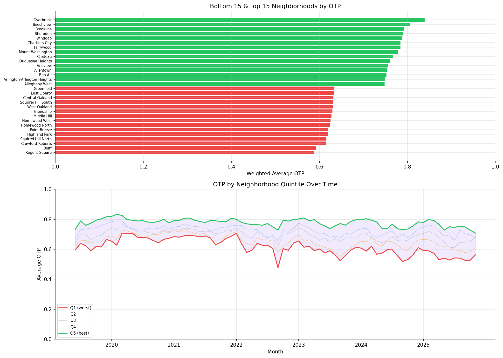

Analysis
04 - Neighborhood Equity
Core OTP Patterns
Coverage: 2019-01 to 2025-11 (from otp_monthly).
Built 2026-03-20 19:31 UTC · Commit 1ffb273
Page Navigation
Analysis Navigation
Data Provenance
flowchart LR
04_neighborhood_equity(["04 - Neighborhood Equity"])
t_otp_monthly[("otp_monthly")] --> 04_neighborhood_equity
01_data_ingestion[["Data Ingestion"]] --> t_otp_monthly
t_route_stops[("route_stops")] --> 04_neighborhood_equity
01_data_ingestion[["Data Ingestion"]] --> t_route_stops
t_routes[("routes")] --> 04_neighborhood_equity
01_data_ingestion[["Data Ingestion"]] --> t_routes
t_stops[("stops")] --> 04_neighborhood_equity
01_data_ingestion[["Data Ingestion"]] --> t_stops
d1_04_neighborhood_equity(("polars (lib)")) --> 04_neighborhood_equity
classDef page fill:#dbeafe,stroke:#1d4ed8,color:#1e3a8a,stroke-width:2px;
classDef table fill:#ecfeff,stroke:#0e7490,color:#164e63;
classDef dep fill:#fff7ed,stroke:#c2410c,color:#7c2d12,stroke-dasharray: 4 2;
classDef file fill:#eef2ff,stroke:#6366f1,color:#3730a3;
classDef api fill:#f0fdf4,stroke:#16a34a,color:#14532d;
classDef pipeline fill:#f5f3ff,stroke:#7c3aed,color:#4c1d95;
class 04_neighborhood_equity page;
class t_otp_monthly,t_route_stops,t_routes,t_stops table;
class d1_04_neighborhood_equity dep;
class 01_data_ingestion pipeline;
Findings
Findings: Neighborhood Equity
Summary
There is a 25 percentage-point spread in OTP between the best- and worst-served neighborhoods (all modes pooled). When restricted to bus-only, the spread narrows to 20 pp but the bottom neighborhoods remain the same. The disparity is structural and stable over time -- all neighborhoods rise and fall together with the system. OTP is now computed from route-level averages (each route weighted once regardless of how many months of data it has), weighted by trip frequency.
Worst-Served Neighborhoods
| Neighborhood | Municipality | OTP (pooled) | OTP (bus-only) | Routes |
|---|---|---|---|---|
| Regent Square | Pittsburgh | 58.8% | 58.8% | 4 |
| Bluff | Pittsburgh | 59.2% | 59.2% | 16 |
| Crawford-Roberts | Pittsburgh | 61.4% | 61.4% | 7 |
| Squirrel Hill North | Pittsburgh | 61.6% | 61.6% | 12 |
| Highland Park | Pittsburgh | 61.9% | 61.9% | 5 |
The bottom neighborhoods are served entirely by bus, so their pooled and bus-only OTP are identical.
Best-Served Neighborhoods
| Neighborhood | Municipality | OTP (pooled) | OTP (bus-only) | Routes (all) | Routes (bus) |
|---|---|---|---|---|---|
| Overbrook | Pittsburgh | 83.9% | 78.9% | 3 | 1 |
| Beechview | Pittsburgh | 80.7% | 75.5% | 3 | 2 |
| Brookline | Pittsburgh | 79.2% | 78.7% | 4 | 2 |
| Sheraden | Pittsburgh | 79.0% | 79.0% | 6 | 6 |
| Windgap | Pittsburgh | 78.9% | 78.9% | 2 | 2 |
Bus-Only Stratification (Simpson's Paradox Check)
Restricting to BUS-mode routes reveals that some neighborhoods' high pooled OTP is driven by rail:
| Neighborhood | Pooled OTP | Bus-Only OTP | Pooled Rank | Bus Rank | Shift |
|---|---|---|---|---|---|
| Bon Air | 75.3% | 66.7% | 13 | 53 | -40 |
| North Shore | 74.5% | 70.7% | 17 | 36 | -19 |
| Beechview | 80.7% | 75.5% | 2 | 11 | -9 |
Bon Air is a clear case of Simpson's paradox: it appears well-served in the pooled analysis (rank 13) but drops to rank 53 (bus-only) because its high pooled OTP is driven almost entirely by rail service. Beechview similarly drops 9 positions.
The bus-only spread (20 pp) is narrower than the pooled spread (25 pp), confirming that rail inflates the apparent equity of neighborhoods it serves.
Frequency-Weighting Effect
Comparing trip-weighted OTP to unweighted (equal weight per route) reveals where high-frequency service diverges from the route average:
- Mean gap: -0.27% (small on average -- the two measures broadly agree).
- Range: -6.1% to +5.7% (meaningful divergence for individual neighborhoods).
| Neighborhood | Weighted | Unweighted | Gap |
|---|---|---|---|
| Carrick | 71.1% | 77.2% | -6.1% |
| Troy Hill | 72.4% | 66.7% | +5.7% |
| Regent Square | 58.8% | 64.1% | -5.4% |
- Negative gap (Carrick, Regent Square): high-frequency routes underperform relative to infrequent ones. Riders experience worse OTP than the simple route average suggests.
- Positive gap (Troy Hill): high-frequency routes are more reliable, so the rider experience is better than the route average implies.
Observations
- Best-performing neighborhoods are served by light rail (Overbrook, Beechview are on the T line) or short bus routes.
- Worst-performing neighborhoods depend on long local bus routes with many stops (e.g., routes 61C, 71B, 77).
- The quintile gap (Q5 - Q1) tracks roughly in parallel over time, meaning the equity disparity is baked into route structure rather than worsening.
- 89 neighborhoods analyzed; 3,760 of 6,466 stops were excluded because they lacked a neighborhood assignment in the data.
- Routes with fewer than 12 months of OTP data are excluded from the analysis.
Caveats
- Sample size varies widely: neighborhoods have between 1 and 74 routes. The 25 pp spread should be interpreted with this context -- neighborhoods with only 1-2 routes have OTP estimates driven by a single route's performance, while those with 10+ routes have more stable estimates. A neighborhood served by one bad route will look worse than a neighborhood with a diversified mix.
- Panel balance (time series): The quintile time series uses an unbalanced panel. Neighborhoods gaining or losing routes over time may show OTP changes from composition shifts (a route entering or exiting), not performance changes. This could create artificial trends in the quintile chart, though the overall pattern of parallel movement suggests this effect is small.
- OTP is weighted by current
trips_7d, not historical ridership. Neighborhoods where service was cut would show current-frequency weights, not past ones. - The
hoodfield had some invalid values (e.g., "0") that were filtered out. - A neighborhood's OTP reflects the routes that pass through it, not the experience of residents who may transfer between routes.
- The unweighted measure treats each route equally regardless of how many trips it runs, which can overstate the importance of infrequent routes.
Review History
- 2026-02-11: RED-TEAM-REPORTS/2026-02-11-analyses-01-05-07-11.md — 7 issues (1 significant). Fixed time-pooled weighting (pre-aggregate OTP to route level before joining), added bus-only stratification revealing Simpson's paradox in Bon Air and Beechview, added NULL trips_7d filter, added minimum-month filter, documented panel balance caveat, added sample-size caveat, and clarified METHODS.md weighting description.
Output

top/bottom neighborhoods bar chart and quintile time series.

scatter plot comparing the two OTP measures and bar chart of the frequency-weighting effect per neighborhood.
No interactive outputs declared.
OTP aggregated by neighborhood (weighted, unweighted, gap, and bus-only weighted).
Preview CSV
bus-only OTP by neighborhood.
Preview CSV
Methods
Methods: Neighborhood Equity
Question
Are certain neighborhoods or municipalities systematically underserved by on-time performance?
Approach
- Pre-aggregate OTP to route-level averages (
AVG(otp) GROUP BY route_id, HAVING COUNT(*) >= 12), then join toroute_stopsandstops. This ensures each route contributes one weight regardless of how many months of data it has. - Filter out
route_stopsrows with NULLtrips_7dto avoid null-weight contamination. - For each neighborhood, compute two OTP measures:
- Weighted OTP: route-level average OTP weighted by
trips_7d(weekly trip count per route-stop). Answers: "What OTP does the average trip in this neighborhood experience?" - Unweighted OTP: simple average across unique routes per neighborhood (deduplicated by route to avoid inflating routes with many stops). Answers: "What is the average reliability of routes serving this area?"
- Weighted OTP: route-level average OTP weighted by
- Compute the gap (weighted - unweighted) per neighborhood to identify where high-frequency service over- or under-performs relative to the route average.
- Bus-only stratification: Repeat the weighted OTP analysis using only BUS-mode routes to check for Simpson's paradox (neighborhoods appearing well-served due to rail rather than bus performance).
- Rank neighborhoods by service quality.
- Examine whether the gap between best- and worst-served areas is widening or narrowing over time via rolling quintile assignment on monthly data.
Data
| Name | Description | Source |
|---|---|---|
otp_monthly |
Monthly OTP per route (routes with fewer than 12 months excluded) | prt.db table |
route_stops |
Links routes to stops with trip counts (rows with NULL trips_7d excluded) |
prt.db table |
stops |
Neighborhood and municipality for each stop | prt.db table |
routes |
Mode (BUS, RAIL) for bus-only stratification | prt.db table |
Output
output/neighborhood_otp.csv-- OTP aggregated by neighborhood (weighted, unweighted, gap, and bus-only weighted)output/neighborhood_otp_bus_only.csv-- bus-only OTP by neighborhoodoutput/neighborhood_equity.png-- top/bottom neighborhoods bar chart and quintile time seriesoutput/weighted_vs_unweighted_otp.png-- scatter plot comparing the two OTP measures and bar chart of the frequency-weighting effect per neighborhood
Sources
| Name | Type | Why It Matters | Owner | Freshness | Caveat |
|---|---|---|---|---|---|
| otp_monthly | table | Primary analytical table used in this page's computations. | Produced by Data Ingestion. | Updated when the producing pipeline step is rerun. | Coverage depends on upstream source availability and ETL assumptions. |
| route_stops | table | Primary analytical table used in this page's computations. | Produced by Data Ingestion. | Updated when the producing pipeline step is rerun. | Coverage depends on upstream source availability and ETL assumptions. |
| routes | table | Primary analytical table used in this page's computations. | Produced by Data Ingestion. | Updated when the producing pipeline step is rerun. | Coverage depends on upstream source availability and ETL assumptions. |
| stops | table | Primary analytical table used in this page's computations. | Produced by Data Ingestion. | Updated when the producing pipeline step is rerun. | Coverage depends on upstream source availability and ETL assumptions. |
| polars | dependency | Runtime dependency required for this page's pipeline or analysis code. | Open-source Python ecosystem maintainers. | Version pinned by project environment until dependency updates are applied. | Library updates may change behavior or defaults. |